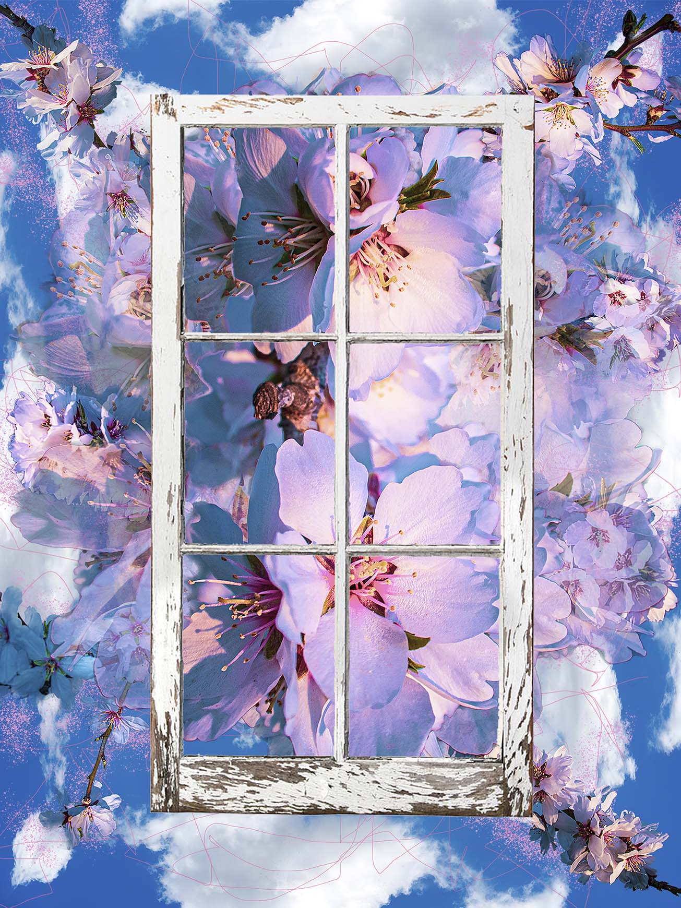
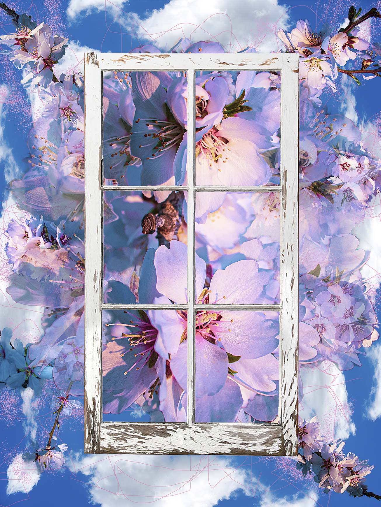

Augmented Blossoms
 


Digital Composition on Metal 24 x 32 inches, and Adobe Aero file, 2020
Digital composite art created from my photographs of almond blossoms, designed intentionally to be viewed in Adobe Aero as augmented reality. Check out the videos of all my Adobe Aero projects on the AR Video page.
Check out the video below to see 2D meet 3D showing Adobe Aero combining my printed 2D digital composition with the augmented reality file I made to compliment it.
www.inspirivityart.com